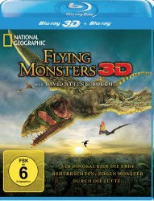

 
 IMDB-Wertung: 0.0 / 10
IMDB-Wertung: 0.0 / 10  Metascore:
Metascore: 
Pterosaurier waren zu Zeiten der Dinosaurier die Herrscher der Lüfte. Mit einer Flügelspannweite von bis zu 12 Meter waren sie so groß wie heutige Düsenflugzeuge. Der weltbekannte Naturforscher David Attenborough begibt sich auf die Spur der spektakulären Flugwesen und findet Erstaunliches heraus. Eine Dokumentation, die den Zuschauer mit neuester 3D-Technologie und CGI zurück in vergangene Zeiten führt und dabei einige Mysterien der Wissenschaft entschlüsselt. Begeben Sie sich auf eine großartige Reise durch überwältigende Landschaften, vom Big Bend National Park in Texas über Lyme Regis in Großbritannien bis zur entlegenen Provinz Liaoning in China.
Jahr:
Dauer: 39 Minuten
FSK:
Land: Studio: Tonspuren: DTS - ,
Untertitel:
Auflösung: 1080p (1920x1080) Größe: 3092 MB
Genre: Dokumentation
Regisseur:
Drehbuch: Doug Atchison
Soundtrack:
Darsteller:
Datei: X:\Dokumentationen\Tiere\National Geographic Flying Monsters (, FSK, 1920x1080) 3D.mkv seit 03.03.2015
Festplatte: HD Serien(SU-Z)+Dokus+Musik
 Es gibt insgesamt 37 Filme in der Gruppe 'Dokumentationen\Tiere'
Es gibt insgesamt 37 Filme in der Gruppe 'Dokumentationen\Tiere'